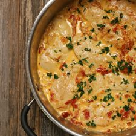

Pollo con salsa de tomate desidratada
Ingredientes
- 4 pechugas medianas de pollo
- 1 cucharada de aceite
- 1/2 taza de vino blanco
- taza de tomates deshidratados + 1 cucharada se aceite de oliva
- 1/2 taza de crema líquida >
Preparacion
- En un bowl colocar el tomate deshidratado con un poco de agua, dejarlo allí por unos 30 min. Luego retirar el agua y rociar con aceite de oliva. Dejar reposar.
- Cortar las pechugas de pollo en trozos grandes, sazonar con sal y pimienta a gusto.
- En un sartén calentar la cucharada de aceite y saltear el pollo unos 4 minutos por lado. Idealmente que quede dorado.
- Retirar el pollo. Y ocupar el mismo sartén para saltear la cebolla unos 3 minutos, añadir el vino blanco, cocinar hasta reducir. Agregar el tomate, cocinar unos 2 minutos, y luego añadir la crema, mezclar bien y dejar al fuego unos 3 minutos más. Servir con perejil picado encima.